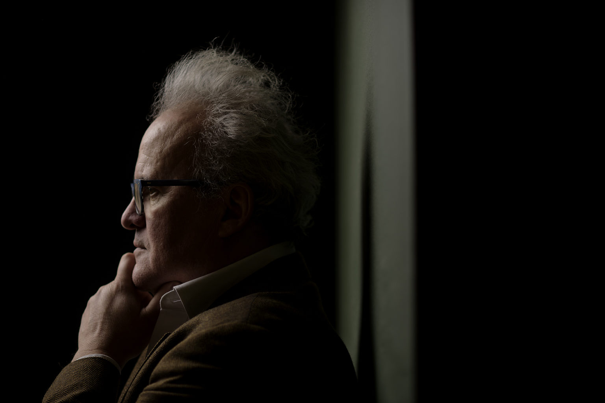

Do bakinog sela uopće nije bilo ceste. Dolazilo se stazom kroz šumu, tolika je to bila vukojebina. Bakina kuća bila je izgrađena od blata. Nije bilo struje, ni vode, a u dvorištu se nalazio poljski wc. Baka je imala jednu kravu, perad, prasce i konja kojeg je nazvala Pakra i s njim je orala', prisjeća se djetinjstva
Kao klinac u gimnaziji u Slavonskom Brodu, negdje polovinom sedamdesetih, Dražen Kokanović sanjario je o nogometnoj karijeri u Dinamu. I nije to bio samo pusti dječački san. Prošao je strogu selekciju nogometaša Rudija Belina, pa je nekoliko godina igrao u kadetima za reprezentaciju Hrvatske.
No, da je kojim slučajem postao nogometaš Dinama, Zagreb zasigurno ne bi imao klub Gjuro 2 kakvog se danas sjećamo, a naša kulturna scena ostala bi zakinuta za brojne jazz festivale i gostovanja najvećih američkih jazzera zadnjih petnaestak godina.
Ovaj neumorni jazz promotor, organizator najboljih jazz festivala u regiji, te nekadašnji kreator programa kultnog Gjure 2 ispričao nam je svoju zanimljivu životnu priču; od odrastanja po selima bez struje u Slavoniji, ludih studentskih dana u Zagrebu do vođenja zagrebačkih klubova, te prijateljstava i suradnje s najvećim jazz umjetnicima na svijetu.
Prvih pet godina života Kokanović je proveo kod bake Eve u Korduševcima, malenom zabačenom selu na obroncima Dilja, udaljenom petnaestak kilometara od Slavonskog Broda. Njegovi roditelji bili su prosvjetni radnici. Dobili su posao u selima udaljenim stotinjak kilometara jedan od drugog, pa se obitelj viđala samo vikendima.
“Do bakinog sela uopće nije bilo ceste. Dolazilo se stazom kroz šumu, tolika je to bila vukojebina”, smije se Kokanović i dodaje kako mu je kao klincu tamo bilo super. Obožavao je živjeti s bakom i svojom tetom Ankicom iako su uvjeti života, pogotovo iz današnje perspektive, bili nezamislivi. “Bakina kuća bila je izgrađena od blata. Nije bilo struje, ni vode, a u dvorištu se nalazio poljski wc. Baka je imala jednu kravu, perad, prasce i konja kojeg je nazvala Pakra i s njim je orala”, prisjeća se Kokanović.
Kad je navršio četiri godine roditelji su mu dobili posao u istoj školi u selu Oriovac i Dražen je od bake preselio roditeljima i dvije godine starijoj sestri Renati. Odvajanje od bake i tete teško mu je palo. “No, s vremenom sam se privikao, krenuo sam u školu i već negdje u trećem razredu osnovne preselili smo u stan u Slavonski Brod jer je u međuvremenu tata završio matematiku i fiziku i tamo dobio profesuru”, prepričava Kokanović.
Gimnaziju je upisao 1974. Bio je prva generacija reforme Stipe Šuvara i sa školom nije imao nikakvih problema. Slavonski Brod je, kaže, bio prekrasan grad, ali on u tim ranim tinejdžerskim godinama nije znao što bi sa sobom. “Bilo je kafića, ali nam nije palo na pamet da ulazimo u njih. Kako nisam imao što raditi, počeo sam se ozbiljnije baviti nogometom”.
Tada je već počeo slušati jazz i ostalu recentnu glazbu, a novac koji je dobivao igrajući nogomet znao je u što će utrošiti. “Dobivali smo takozvanu hranarinu za treninge i odlaske na gostovanja. I to je bila velika lova za klinca i počeo sam je trošiti na ploče”, prisjeća se.
U Brodu je tada postojala robna kuća Vesna, imala je i poseban odjel s pločama i Dražen je tamo često provodio vrijeme nakon škole. “I to je bila ludnica, imao si ploče Beatlesa, Stonesa, Doorsa, Allman Brothers Banda. Mama i tata su kod kuće isto imali pun kufer ploča i singlica. Sjećam se ploča Vice Vukova, Ive Robića, Jimmyja Stanića, Arsena…, a stari je slušao swing, Glenna Millera, Count Basieja i Duke Ellingtona“, prisjeća se Kokanović svojih prvih doticaja s glazbom.
Nakon gimnazije odlučio je upisati faks. “Stari je htio da upišem strojarstvo u Slavonskom Brodu jer je ondje bila tvornica Đuro Đaković. Bila je to ozbiljna tvornica koja je proizvodila tenkove, lokomotive, vagone. I naravno, u devedesetima je propala”. U srednjoj školi se već, kaže, susreo sa Zagrebom jer je vikendima odlazio k sestri koja je ondje studirala sociologiju, pa nije imao namjeru ostajati u Slavonskom Brodu.
“Zagreb je imao pedeset kina, hrpu kazališta, osvijetljene široke ulice, djevojke… Bilo mi je kao da iz Zagreba dođeš u New York. I ne želim time umanjiti Brod. Obožavam taj grad, ali imali smo samo dva kina, Jadran i Partizan. Živjelo je tamo i puno finog svijeta, recimo slikar Vladimir Bečić, pa Ivana Brlić Mažuranić, balerina Mia Čorak Slavenska. Bio je to lijep mali grad u vrijeme socijalizma”, opisuje Kokanović.
Nakon gimnazije preselio je u Zagreb. Dvoumio se između studija prava i arhitekture, ali kada je skužio da je arhitektura ozbiljan faks na kojem su predavanja obavezna, odlučio se za pravo. “Bio sam gladan kina, kazališta i koncerata i upisao sam faks na kojem ne trebam provoditi cijele dane”.
Prve dvije godine živio je u domu na Savi. “Bila je to mala uska sobica s dva kreveta, ormarom i radnim stolom. Cimer mi je bio jedan dečko iz Bosne koji je studirao strojarstvo i nismo mogli dugo biti u tom sobičku. Dani su izgledali tako da se ujutro ustaneš, odeš u dućan, kupiš malo kruha i parizera i fijuuu, zapališ u grad”, govori.
Dane je najčešće provodio s ekipom u SC-u Savskoj, Kinoteci i kinu Tuškanac. Odlazilo se na matineje i na večernje projekcije, a dnevno bi pogledali i po dva, tri filma. “ I to je bila neviđena zajebancija. Uvijek smo nešto smišljali, radili klinačke gluposti i kao ludi gledali filmove”, prisjeća se Kokanović.
Kina su, govori, uvijek bila krcata. “To je bilo vrijeme Juge i Kinoteka je tada bila šesta po fundusu filmova u svijetu. Ispred nas su bili jedino Ameri, Englezi, Francuzi, Nijemci i naravno Česi. Tako da smo ja i moja ekipa tamo pogledali cjelokupnu povijest kinematografije”, govori.
Navečer se izlazilo u Treću liniju u SC-u. Bilo je to mjesto gdje su svoje prve koncerte imali Azra, Film i ostali novovalni bendovi, a izlazilo se i u Kulušić i Lapidarij. “Saloon nam je bio SF jer nismo imali love, a i to je bio šminkerski klub. Mi smo više bili klošari”, smije se Kokanović.
Na trećoj godini faksa počeo je raditi kako bi se maknuo iz studentskog doma. Bili su to dobro plaćeni, povremeni poslovi. Radio je i kao noćni portir na Velesajmu. “ U vrijeme sajmova čuvali smo štandove preko noći. Mama i tata su mi slali novce za osnovne stvari, a za kvalitetniji život si morao raditi, a posla je bilo kao u priči”, govori.
Najbolju lovu je zaradio na čišćenju stanova u Novom Zagrebu. “U Dugavama i okolnim naseljima izgradile su se zgrade, bilo je pun kufer stanova i nas desetak dečki se skupilo. Prali smo vrata, prozore, podove, stepenice i haustore. Čistili smo prije nego su se ljudi useljavali i to je bila lova do krova. Radiš dva tjedna ubiješ se od posla i možeš s tom lovom živjeti tri mjeseca. Naravno da sam poslije išao u Trst kupovati ploče kojih nije bilo kod nas”, prepričava.
Do svoje 21. godine uspio je skupiti respektabilan broj ploča, a u Trstu je svaki mjesec kupovao recentnu glazbu iz svijeta. Zbog te strasti prema glazbi dobio je i prvi angažman kao DJ u Lapu. I to se dogodilo slučajno. Kako se uvijek muvao oko kulturnih događanja, jednog popodneva promatrao je ekipu Kugl teatra kako ispred doma na Savi slaže scenu za predstavu. Pomagao im je oko slaganja i upoznao je umjetnika Bartola Indoša.
“Sprijateljili smo se i kad je skužio da moj tadašnji cimer Nikola Čurković i ja imamo enormnu kolekciju ploča, predložio je u Lapu da nas dvojica puštamo glazbu. I tako smo svakog smo četvrtka imali slušaonice. Ljudi su dolazili slušati glazbu. To je danas nezamislivo, ali tada nije bilo interneta i nisu se sve ploče mogle kupiti kod nas. Ispočetka smo puštali cijele ploče, primjerice pustili bismo cijeli novi album Tom Waitsa ili Talking Headsa, pa bismo oko ponoći krenuli s plesnom glazbom” prisjeća se Kokanović koji je godinu kasnije puštao glazbu i u Kulušiću i već tada razmišljao o svojem klubu.
S dvadeset i četiri godine je diplomirao i otišao u vojsku u Mostar na godinu dana. “Bilo nam je ludo, nabijali smo nogomet, kupali se u Neretvi i dobro se zezali”. Zbog velike dioptrije bio je granično sposoban, pa su ga rasporedili na administrativne poslove. “I to je bilo genijalno, svaki dan ti dolaze novine iz svih republika, a ti sjediš i cijeli božji dan čitaš novine. Tu i tamo bih napravio kavu nekom oficiru, sastavio raspored za stražu i u tri sam bio gotov s poslom”, prisjeća se.
I u vojsci je pronašao priliku za zaradom. U vojarni je skužio projektor, pa je predložio svojem poručniku da organiziraju večeri filmova. “Rekao sam mu da kad vojska nema posla ili zanimaciju da će raditi sranja i da bi ih navečer mogli zaokupiti filmskim projekcijama”. Poručnik je, kaže, pristao, pa je iz zagrebačke Kinoteke naručivao velike kolutove filmova. “U jednoj prostoriji zašili smo dvije plahte, zakucali ih za zid i prikazivali filmove, a ja sam naplaćivao ulaz vojnicima, morao sam platiti naručeni flim, a ostalo mi je bila zarada”, prepričava Kokanović.
Nakon vojske zaposlio se kao referent u Unikonzumu. “Čovječe, to je bio najdosadniji posao na svijetu. Bio sam referent za sistematizaciju poslova i radnih zadataka i morao sam napisati što svaki radnik radi. Tipa, detaljan opis posla viljuškara i tako za svako radno mjesto”. U godinu dana je, prisjeća se, napisao knjigu od tristotinjak stranica. Kasnije je dobio mjesto pravnika. Odlazio je svakodnevno na sud i posao mu je postao nešto zanimljiviji. Nakon četiri godine, 1989. taman pred raspad Jugoslavije, napustio je taj posao. S prijateljem Nikolom Devčićem Mišom prijavio se na natječaj za umjetničkog voditelja zagrebačkog kluba Đure Đakovića na Medveščaku i dobio ga.
Uz Mišu je, kaže, imao još dva partnera; Miroslava Balenta Mikija i Antona Petkovića Sulju. “Suljo je završio engleski i književnost i prevodio je Bukowskog, a Miki je bio gradski latino lover i poznavao je sve djevojke u gradu. Njih dvojica bili su stariji od mene, nekih sedam, osam godina. Njih dvojica su poznavali sve djevojke i bili su face, a Mišo i ja smo znali kulturno umjetničku scenu, slikare, pisce, glumce..”, prepričava Kokanović. Miki i Suljo bili odgovorni za ugostiteljski dio kluba, a Mišo i on kreirali su program.
Plan da njih četvorica preuzmu Đuru pao je u Zvečki i čim su prošli na natječaju, primili su se posla. Trebalo je preurediti stari klub na Medveščaku. “Miši je smetala prašina, pa smo nas trojica odradili sve građevinske radove, sve živo smo rušili, pa ponovno zidali, gletali, lijepili pločice”, govori. Radili su sami jer nije bilo novaca, ali imali su arhitekte koji su sve to projektirali. “ Damir Radaković i Zoran Zidar su sve nacrtali, a kako je Miki studirao fiziku uspio je odraditi i dio sa strujom i vodom”, prisjeća se. Klub su otvorili godinu kasnije, u studenom 1990.
Bilo je to, kaže, doba suludog nacionalizma i imali su problema zbog imena kluba. “Ne znam kako da objasnim uopće tu vrstu ludila. Proglasili su nas komunjarama i nisu željeli dostavljati pivo klubu koji se zove Đuro Đaković. Inače Đuro Đaković je bio jedan vrlo pozitivan lik, ali 1990. nije više bio pozitivan jer su došli neki čudni ljudi na vlast, pa smo zbog poslovanja odlučili promijeniti ime”, govori.
Preimenovali su ga u Gjuro 2. Željeli su, objašnjava, zadržati ime Đuro jer je taj klub imao reputaciju i prije nego su ga preuzeli i potpuna promjena imena ne bi bio dobar marketinški potez. Otvorenje kluba bilo je, govori spektakularno. Zbog navale ljudi tulum se protegao na dvije večeri.
“Sretan sam što nitko nije nastradao kolika je to gužva bila. Bio sam u neopisivom stresu jer nam je u dva dana prošlo preko 1500 ljudi. Stalno sam bio u panici da ne rikne klima i da se svi ne podavimo. To su bili oblaci dima, probijanje, bio je to over dose u odnosu na kvadraturu i volumen kisika u prostoru. Svi plešu, skaču, znoje se, curila je vlaga sa zidova, taman friško okrečenih”, opisuje Kokanović.
Gjuro 2 bio je klub koji je definitivno unaprijedio kulturnu scenu Zagreba. Bio je to klub u kojem su nastupali svi važni bendovi onog doba, od Majki, Pipsa, Party Breakersa, do jazzera iz Hrvatske i ex Jugoslavije. Održavale su se tamo i brojne promocije knjiga, predstave, spektakularne modne revije pa i neprežaljeni FAK, Festival alternativne književnosti koji je od pisaca napravio zvijezde, a u klub su mu zalazila i svjetski poznata imena poput škotskog pisca Irvina Welsha.
U Gjuri se znao odvijati i malo provokativniji program. Doveli su i njujorške transvestite. Izveli su show Nymphomania u kojem je bilo bičevanja, pjevanja i plesanja na pozornici, a performance su radili i umjetnici iz londonskog sado mazo kluba Torture Garden.
“Bile su to spektakularne predstave i skužili smo da se to ljudima sviđa i pokrenuli smo program slične provenijencije koji je išao dvije godine. Ljudi su dolazili obučeni na način kako se nisu nigdje drugdje u gradu nisu mogli oblačiti; lateks, koža, lanci”, prisjeća se devedesetih u Gjuri Kokanović.
Svaku večer je, govori, bilo ludo, pogotovo na početku, u vrijeme rata, kada ljudi nisu mogli planirati život. “Nisi znao hoćeš li biti pozvan u vojsku, nitko se nije htio ženiti i stvarati obitelj jer nisi znao gdje ćeš biti sutra. Praktično su te noći, dok nisu počeli bombardirati Zagreb, bile potpuno lude. Svaku noć je bilo krcato i nije bilo radnog vremena, kao Berlin u filmu Cabaret, dakle sex, drugs and rock’n’ Roll”, opisuje.
Živjelo se, govori, od danas do sutra. “Teško je opisati atmosferu tog beznađa. Bilo je to kao u pjesmi ‘We Want it All and We Want it Now’. Dolazila je ekipa rokera, glumaca, pisaca i umjetnika koja nije u to vrijeme planirala nikakvu budućnost, bilo je idemo sada živjeti, a što će biti sutra vidjet ćemo. Što bi rekla Scarlet O’Hara; sutra je novi dan”, prisjeća se Kokanović i dodaje kako su krajem prošle godine, baš na trideseti rođendan Gjure, odlučili napraviti monografiju tog kluba.
“Za tu monografiju imamo brdo materijala, flyera, fotki, izrezaka iz novina koje sam slučajno pronašao na tavanu nakon potresa, pa smo nazvali naše prijatelje koji su tamo proveli valjda deset godina svojeg života i zamolili ih da nešto napišu. Pojavio se problem da se većina ljudi ništa ne sjeća ili se sjeća mutno. Do sada smo prikupili jedno dvadesetak priča i računamo na još nekih desetak. To će biti priče ljudi koji su potrošili lakat na šanku. Prije su bili divlji klinci, a danas su ugledni umjetnici,”, priča Kokanović.
Nakon desetak intenzivnih godina u Gjuri, Kokanović se zapošljava u odvjetničkom uredu i gura paralelno jedan i drugi posao. Jutra provodi na sudu na parnicama, a u rupama između stranaka kroji program za Gjuru. Imao je tada 38 godina i život mu se, kaže, kopernikanski promijenio; “Oženio sam se, dobio sina Matka i došle su druge obaveze. Nisam više mogao bančiti svaku noć i ujutro dolaziti kući ,”prepričava.
U odvjetničkom uredu ostaje raditi pet godina, pa prelazi na nekoliko godina u Ghetaldus, a 2005. pokreće jazz festivale; najprije Zagreb jazz festival, pa Jazzarellu, festival na kojem su žene liderice i na kojem je otkrivao jazzerice koje su do danas postale velike face.
U početku se, kaže, susretao s komentarima da nema šanse da to uspije u Hrvatskoj.“Ljudi su u pravilu skeptični zato što smatraju da ima premalo publike, što naravno nije točno, da je to skupo i elitno jer, ruku na srce, to sve košta. Ali kad nešto voliš, kad ti je do nečeg stalo u životu, ideš probati. Ne možeš samo sjediti doma, govoriti kako je svijet nepravedan, kako je sve grozno i kopati nos i kenjati po Facebooku. OK, tada još nije bilo Facebooka”, kaže.
Zadnjih petnaest godina Kokanović je uspio organizirati dvadeset i pet jazz festivala u Hrvatskoj, što je preko 150 koncerata. Dovodio je velikane kao što su Sonny Rollins, George Benson, Chick Corea, Pat Metheney Group, McCoy Tyner, Ornette Coleman…
I to se, kaže, ne može isfinancirati bez obilate financijske podrške ozbiljnih firmi. “Nije to rock koncert s kojim se pokriješ od prodaje karata. Publike je manje, a honorari izvođača kreću se od 50 do 150 tisuća dolara po koncertu. Tu su još i produkcijski troškovi, najam dvorane, razglasa, hoteli, prijevoz i nakupi se troškova kao u priči”, objašnjava.
Većina festivala koje je radio, bili su financirani privatnim novcem. To su velike bogate hrvatske kompanije poput Maistra iz Rovinja , tadašnjeg Vipneta, , Arena Hospitality grupe iz Pule i Ghetaldusa koji je najviše financirao ženske festivale na kojima je doveo Diane Reevis, Reginu Carter, Anat Cohen, Esperanzu Spalding. “Politika festivala je da uvijek pokušam dovesti barem jednu ikonu jazza, dakle ljude koji mijenjali povijest te glazbe. Imao sam sreće da sam uspio nabaviti novac jer, recimo, Zagreb jazz festival ima javnu podršku samo od strane grada Zagreba i turističke zajednice grada Zagreba”, priznaje Kokanović i objašnjava kako je ta financijska podrška mnogo manja nego ostalim zemljama bivše Jugoslavije.
“Beograd ima 300 tisuća eura budžet, Ljubljana isto tako, Sarajevo 220 tisuća, ako ja navučem 50 tisuća eura godišnje to je super. Zahvalan sam na tome, ali nema podrške iz drugih institucija, pa moram svake godine kretati ispočetka jer nemam osiguran budžet i to je vječna borba, ali takav je život i ništa ne kukam”, govori Kokanović.
Najgora stvar koju je napravio, priznaje, bilo je otvaranje Vip Jazz Cluba u centru Zagreba prije osam godina, a posljedice tog poslovnog poteza osjeća i danas. Vjerovao je da u Zagrebu ima prostora za jedan takav klub. “Tu sam se malo zaigrao i preračunao”. I pokojni Boško Petrović govorio mu je da ne ide u to. “ Sjećam se da mi Boško rekao: ‘jesi normalan? Nemoj otvarati jazz klub, propast ćeš’. I bio je u pravu, klub je potrajao negdje pet godina, a ja sam financijski propao. Još imam kredit koji otplaćujem”, govori.
Bio mu je to težak udarac jer sve što je u životu zaradio utrošio je u taj klub, ali kako i sam kaže, život ide dalje. Nastavio je raditi festivale u Zagrebu, Rovinju i Puli, a zadnja dva festivala odgođena su zbog korone. Jedan u Puli i zagrebački koji je trebao biti krajem prošle godine. “Pulski opet planiramo početkom sedmog mjeseca. Održat će se u Istarskom narodnom kazalištu, a zagrebački, koji će imati spektakularan program, ide na jesen”, najavljuje.
Iako je vrijeme korone, Kokanović ne miruje, kuje planove za buduće festivale, traži novac i istražuje jazz. “Svaki dan se time bavim, imam troje djece, kuham svaki dan, slušam jazz, pretplaćen sam na sve tiskane novine o jazzu, slušam i istražujem na internetu. I cijeli život možeš proučavati jazz i svaki dan skužim da nešto ne znam, čak ni o prošlosti, koju sam detaljno proučio”, veselo će Kokanović.
O penziji, kaže, ne razmišlja. “Kakva penzija, radit ću u to do smrti. Moji su festivali uhodani stroj, koji odlično funkcionira, nema tu nešto što ja ili moji partneri ne znaju. Postoji jedan jedini problem, a to je question of money, a moj posao je svakodnevni pokušaj nabavljanja novca i time se i sada bavim”, govori.
I dalje želi imati svoj jazz klub, ali ovaj put bi, kaže, puhao na hladno. “Želim umrijeti u svojem jazz klubu pijući vino, ali nemam sad novaca. Imam energiju i znanje i traumatično iskustvo s Vip klubom i ako ćemo maštati, volio bih imati dva kluba jedan u Istri i jedan u Zagrebu, ali to je sad klinačka maštarija bez obzira na to što imam šest banki. Kad sam bio mlad htio sm igrati u Dinamu, a vidi gdje sam završio. Život je nepredvidljiv, tako da tko zna što će biti”, zaključuje Kokanović.